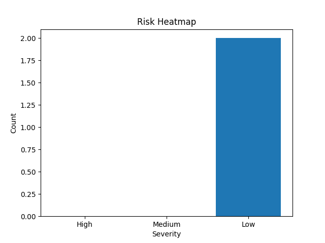

<!DOCTYPE html>
<html lang="en">
<head>
<meta charset="UTF-8">
<title>RedSentinel Security Assessment</title>
<style>
body {
    font-family: Arial, sans-serif;
    margin: 40px;
    color: #222;
}
h1, h2, h3 {
    color: #8b0000;
}
table {
    width: 100%;
    border-collapse: collapse;
    margin-top: 15px;
}
th, td {
    border: 1px solid #ccc;
    padding: 8px;
}
th {
    background-color: #f4f4f4;
}
.sev-CRITICAL { color: darkred; font-weight: bold; }
.sev-HIGH { color: red; font-weight: bold; }
.sev-MEDIUM { color: orange; }
.sev-LOW { color: green; }
.sev-INFO { color: gray; }
.footer {
    margin-top: 60px;
    font-size: 0.9em;
    color: #555;
}
.watermark {
    position: fixed;
    top: 40%;
    left: 20%;
    font-size: 80px;
    color: rgba(200, 200, 200, 0.1);
    transform: rotate(-30deg);
    z-index: -1;
}
</style>
</head>

<body>

<div class="watermark">RedSentinel</div>

<h1>Security Assessment Report</h1>

<p><strong>Target:</strong> hackura.store<br>
<strong>Generated:</strong> 2026-01-02 18:10 UTC</p>

<hr>

<h2>Executive Summary</h2>

<p>
This report presents the results of a non-intrusive security assessment
conducted using automated discovery and analysis tools.
The goal is to identify exposed services, observable technologies,
and common security weaknesses.
</p>

<p>
<strong>Executive Risk Score:</strong>
<span class="sev-HIGH">4.25 / 10</span>
</p>

<p>
The Executive Risk Score represents the overall security posture of the target,
considering severity, likelihood, and confidence of findings.
Scores above <strong>7.0</strong> indicate a high priority for remediation.
</p>

<hr>

<h2>Risk Heatmap</h2>

<hr>

<h2>Technical Findings</h2>
<h3>Medium</h3>
<table>
<tr>
<th>Finding</th>
<th>Severity</th>
<th>CVSS</th>
<th>CVSS Vector</th>
<th>Confidence</th>
<th>Evidence</th>
<th>Recommendation</th>
</tr>

<tr>
<td>General Security Observation</td>
<td class="sev-MEDIUM">MEDIUM</td>
<td>6.5</td>
<td><code>CVSS:3.1/AV:N/AC:H/PR:L/UI:R/S:U/C:L/I:L/A:N</code></td>
<td>0.62</td>
<td>Host is reachable via ICMP</td>
<td>Review this finding and apply security best practices appropriate to the affected component.</td>
</tr>

<tr>
<td>General Security Observation</td>
<td class="sev-MEDIUM">MEDIUM</td>
<td>6.5</td>
<td><code>CVSS:3.1/AV:N/AC:H/PR:L/UI:R/S:U/C:L/I:L/A:N</code></td>
<td>0.62</td>
<td>Host is reachable via ICMP</td>
<td>Review this finding and apply security best practices appropriate to the affected component.</td>
</tr>

<tr>
<td>General Security Observation</td>
<td class="sev-MEDIUM">MEDIUM</td>
<td>6.5</td>
<td><code>CVSS:3.1/AV:N/AC:H/PR:L/UI:R/S:U/C:L/I:L/A:N</code></td>
<td>0.62</td>
<td>Host is reachable via ICMP</td>
<td>Review this finding and apply security best practices appropriate to the affected component.</td>
</tr>

<tr>
<td>General Security Observation</td>
<td class="sev-MEDIUM">MEDIUM</td>
<td>6.5</td>
<td><code>CVSS:3.1/AV:N/AC:H/PR:L/UI:R/S:U/C:L/I:L/A:N</code></td>
<td>0.68</td>
<td>http://hackura.store [308 Permanent Redirect] Country[UNITED STATES][US], HTTPServer[Vercel], IP[216.198.79.65], RedirectLocation[https://hackura.store/]</td>
<td>Review this finding and apply security best practices appropriate to the affected component.</td>
</tr>

<tr>
<td>Publicly Accessible HTTP Service Detected</td>
<td class="sev-MEDIUM">MEDIUM</td>
<td>6.5</td>
<td><code>CVSS:3.1/AV:N/AC:H/PR:L/UI:R/S:U/C:L/I:L/A:N</code></td>
<td>0.68</td>
<td>https://hackura.store [307 Temporary Redirect] Country[UNITED STATES][US], HTTPServer[Vercel], IP[216.198.79.1], RedirectLocation[https://www.hackura.store/], Strict-Transport-Security[max-age=63072000], UncommonHeaders[x-vercel-id]</td>
<td>Review this finding and apply security best practices appropriate to the affected component.</td>
</tr>

<tr>
<td>Publicly Accessible HTTP Service Detected</td>
<td class="sev-MEDIUM">MEDIUM</td>
<td>6.5</td>
<td><code>CVSS:3.1/AV:N/AC:H/PR:L/UI:R/S:U/C:L/I:L/A:N</code></td>
<td>0.68</td>
<td>https://hackura.store/ [307 Temporary Redirect] Country[UNITED STATES][US], HTTPServer[Vercel], IP[216.198.79.65], RedirectLocation[https://www.hackura.store/], Strict-Transport-Security[max-age=63072000], UncommonHeaders[x-vercel-id]</td>
<td>Review this finding and apply security best practices appropriate to the affected component.</td>
</tr>

<tr>
<td>Publicly Accessible HTTP Service Detected</td>
<td class="sev-MEDIUM">MEDIUM</td>
<td>6.5</td>
<td><code>CVSS:3.1/AV:N/AC:H/PR:L/UI:R/S:U/C:L/I:L/A:N</code></td>
<td>0.68</td>
<td>https://www.hackura.store/ [200 OK] Country[UNITED STATES][US], HTML5, HTTPServer[Vercel], IP[216.198.79.1], Script, Strict-Transport-Security[max-age=63072000], Title[Hackura], UncommonHeaders[x-matched-path,x-vercel-cache,x-vercel-id], X-Powered-By[Next.js]</td>
<td>Review this finding and apply security best practices appropriate to the affected component.</td>
</tr>
</table>
<hr>

<h2>AI-Generated Remediation Roadmap</h2>

<p>
The following remediation guidance was generated to assist technical
and non-technical stakeholders in prioritizing corrective actions.
</p>

<pre>AI remediation unavailable: 400 Client Error: Bad Request for url: https://generativelanguage.googleapis.com/v1beta/models/gemini-1.5-flash:generateContent?key=AIza...</pre>

<hr>

<h2>Risk Acceptance</h2>

<p>
Any risks not immediately remediated should be formally accepted
by business stakeholders after evaluating operational impact,
likelihood of exploitation, and regulatory requirements.
</p>

<hr>

<h2>Consultant Sign-Off</h2>

<p>
This assessment was conducted for educational and defensive purposes
using RedSentinel.
</p>

<p>
<strong>Assessor:</strong> ___________________________<br>
<strong>Date:</strong> ___________________________
</p>

<div class="footer">
Generated by RedSentinel – AI-Assisted Security Analysis
</div>

</body>
</html>
